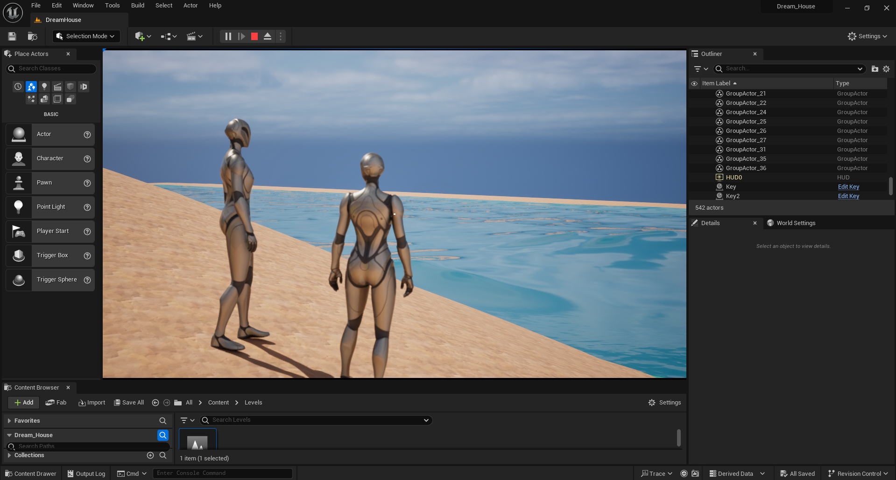
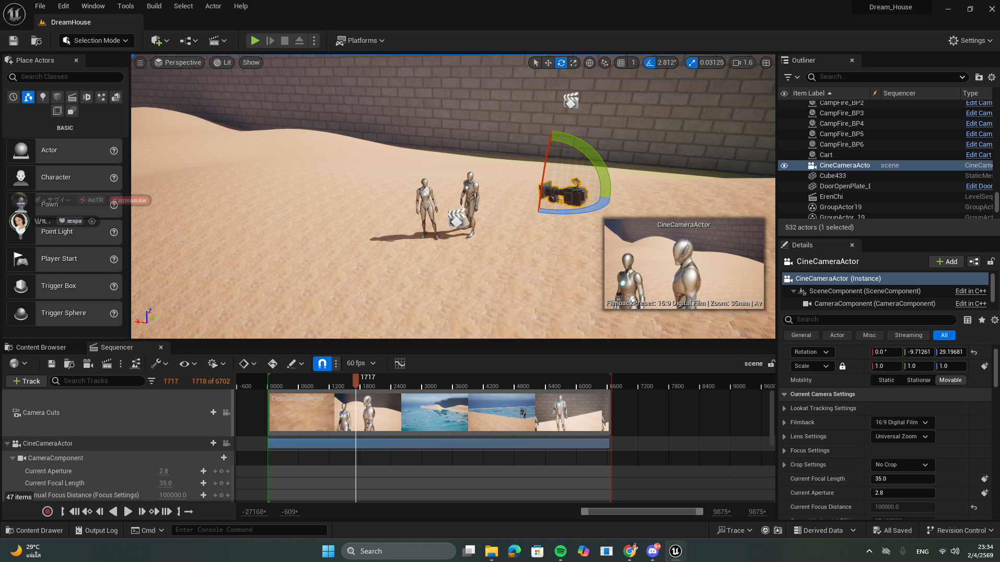

ใช้ Cinematic Sequencer ใน Unreal Engine เพื่อสร้าง Animation Timeline โดยออกแบบลำดับภาพ ให้มีการเล่าเรื่องอย่างเป็นระบบ ตั้งแต่การวางมุมกล้อง Camera Composition / Camera Movementและการ Animate Object/Character ผ่าน Keyframe

ใช้งาน Cine Camera Actor โดยปรับตั้งค่าพารามิเตอร์ให้สอดคล้องกับเลนส์กล้องในโลกความเป็นจริง เช่น ระยะโฟกัส รูรับแสง และระยะชัดลึก เพื่อให้ได้ภาพที่มีมิติแบบภาพยนตร์

จัดการคิวภาพและการตัดสลับมุมกล้องต่างๆ ภายในซีนอย่างต่อเนื่องผ่าน Camera Cuts Track ช่วยให้สามารถพรีวิวผลลัพธ์ของโปรดักชันได้แบบ Real-time โดยไม่ต้องพึ่งพาโปรแกรมตัดต่อภายนอก